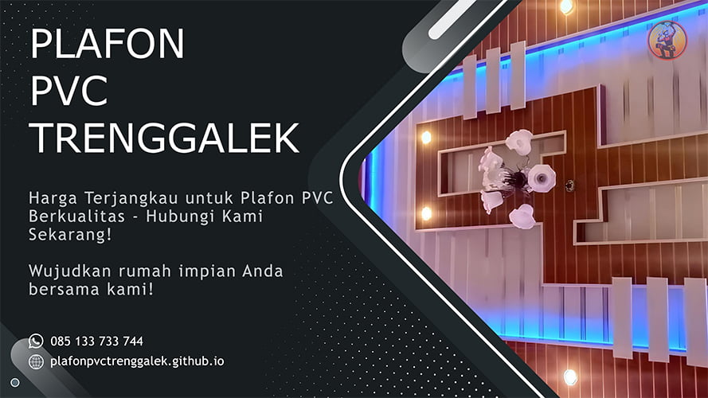

Plafon PVC: Solusi Tepat untuk Plafon Rumah Impian Anda
Bosan dengan plafon rumah yang itu-itu saja? Ingin menghadirkan suasana baru yang lebih modern, elegan, dan tahan lama di rumah Anda? Plafon PVC adalah jawabannya!
Apa itu Plafon PVC?
Plafon PVC (Polyvinyl Chloride) adalah salah satu jenis plafon yang terbuat dari bahan plastik. Plafon ini semakin populer digunakan di Indonesia karena memiliki banyak kelebihan dibandingkan plafon jenis lain, seperti:
-
•Tahan air dan rayap
Plafon PVC tidak akan lapuk atau rusak karena air, sehingga cocok digunakan di daerah yang lembab atau rawan banjir. Selain itu, plafon PVC juga tahan terhadap serangan rayap, sehingga tidak mudah rusak.
-
•Ringan dan mudah dipasang
Plafon PVC jauh lebih ringan dibandingkan plafon gypsum, sehingga lebih mudah dipasang dan tidak membebani struktur bangunan.
-
•Tahan lama
Plafon PVC memiliki usia pakai yang panjang dan tidak mudah pudar warnanya.
-
•Tersedia dalam berbagai macam motif dan warna
Plafon PVC tersedia dalam berbagai macam motif dan warna, sehingga Anda dapat memilih yang sesuai dengan selera dan desain rumah Anda.
-
•Harga terjangkau
Plafon PVC umumnya lebih murah dibandingkan plafon gypsum.
Mengapa Harus Memilih Plafon PVC?
Ada banyak alasan mengapa Anda harus memilih plafon PVC untuk rumah Anda:
-
•Meningkatkan nilai estetika rumah
Plafon PVC tersedia dalam berbagai macam motif dan warna yang menarik, sehingga dapat membantu meningkatkan nilai estetika rumah Anda.
-
•Menciptakan suasana yang lebih nyaman
Plafon PVC dapat membantu menciptakan suasana yang lebih nyaman di rumah Anda karena sifatnya yang tahan panas dan tahan suara.
-
•Hemat biaya
Plafon PVC memiliki usia pakai yang panjang dan mudah dibersihkan, sehingga Anda dapat menghemat biaya perawatan dalam jangka panjang.
-
•Ramah lingkungan
Plafon PVC terbuat dari bahan yang dapat didaur ulang, sehingga ramah lingkungan.
Bagaimana Cara Memilih Plafon PVC yang Tepat?
Berikut adalah beberapa tips untuk memilih plafon PVC yang tepat untuk rumah Anda:
-
•Tentukan anggaran Anda
Plafon PVC tersedia dalam berbagai macam harga, sehingga Anda dapat memilih yang sesuai dengan anggaran Anda. Pilih motif dan warna yang sesuai dengan selera dan desain rumah Anda.
-
•Pertimbangkan ukuran ruangan Anda
Plafon PVC tersedia dalam berbagai macam ukuran, sehingga Anda dapat memilih yang sesuai dengan ukuran ruangan Anda.
-
•Pilih merek plafon PVC yang terpercaya
Ada banyak merek plafon PVC di pasaran, jadi pastikan Anda memilih merek yang terpercaya dan memiliki reputasi yang baik.
-
•Gunakan jasa pemasangan plafon PVC yang profesional
Pemasangan plafon PVC yang benar akan memastikan bahwa plafon PVC Anda terpasang dengan baik dan tahan lama.
Dapatkan Plafon PVC Anda Sekarang!
Jangan ragu lagi, segera hubungi kami untuk mendapatkan plafon PVC terbaik untuk rumah Anda. Kami menyediakan berbagai macam motif, warna, dan ukuran plafon PVC yang sesuai dengan kebutuhan Anda. Kami juga menyediakan jasa pemasangan plafon PVC yang profesional dan berpengalaman.
Jangan biarkan plafon rumah Anda terlihat kusam dan ketinggalan zaman. Ubah suasana rumah Anda dengan plafon PVC yang modern, elegan, dan tahan lama.
Hubungi kami sekarang dan dapatkan penawaran terbaik! Mari wujudkan rumah impian Anda bersama plafon PVC!